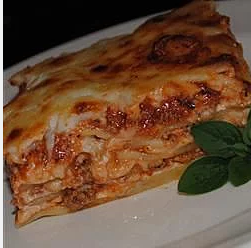

Homepage
Lasagna

*Recipe by Kristy Kniest
Description
Lasagna is a baked pasta dish made up of several layers of pasta, cheese, and sauce.
This recipe details a non-vegetarian lasagna made with ground beef. It yields 12 servings
Ingredients
- 1 (16 ounce) package lasagna noodles
- 1 pound lean ground beef
- 3 (15 ounce) cans tomato sauce
- 1 (6 ounce) can tomato paste
- 2 teaspoons garlic salt
- 5 tablespoons Italian seasoning
- 1 pint part-skim ricotta cheese
- 2 cups shredded mozzarella cheese
Steps
- In a large pot cook lasagna noodles in boiling salted water until al dente. Rinse with cool water. Drain.
- In large sauce pan cook ground beef. Drain excess grease. Combine tomato sauces and tomato paste with ground beef and simmer until bubbly. Add garlic salt and Italian seasoning and reduce heat to low simmer. Cook for 10 minutes.
- To assemble, in the bottom of a 13x9 inch baking dish spread a thin layer of sauce. Next, add a layer of noodles, ricotta cheese, sauce/ground beef mixture, and then grated mozzarella cheese. Repeat until baking dish is filled. Garnish top with additional shredded mozzarella cheese.
- In a preheated 375 degree F(190 degree C) oven bake for 30 minutes or until bubbly. Let stand for 15 minutes and serve.